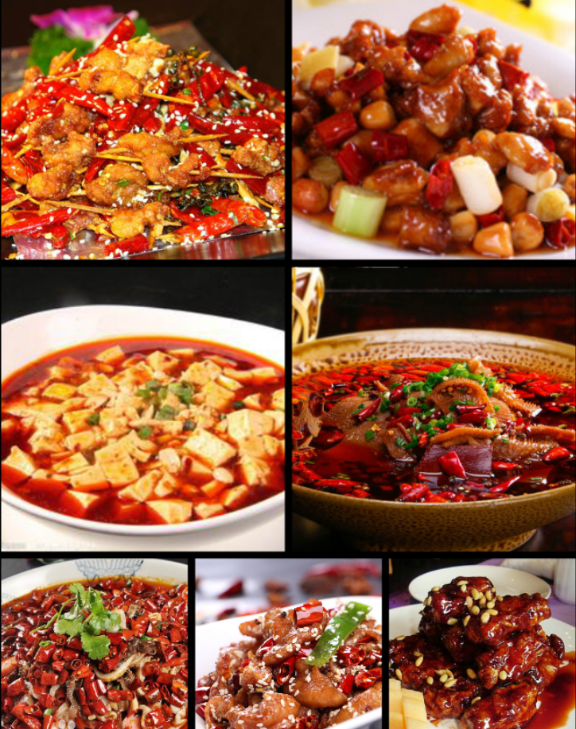
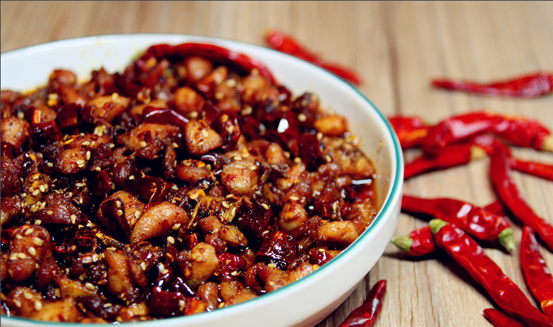
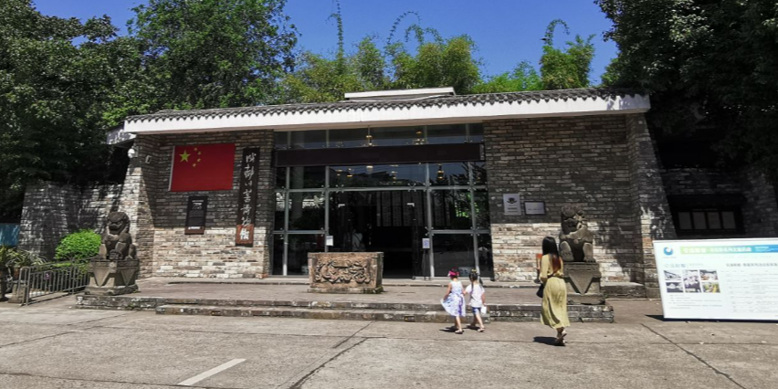
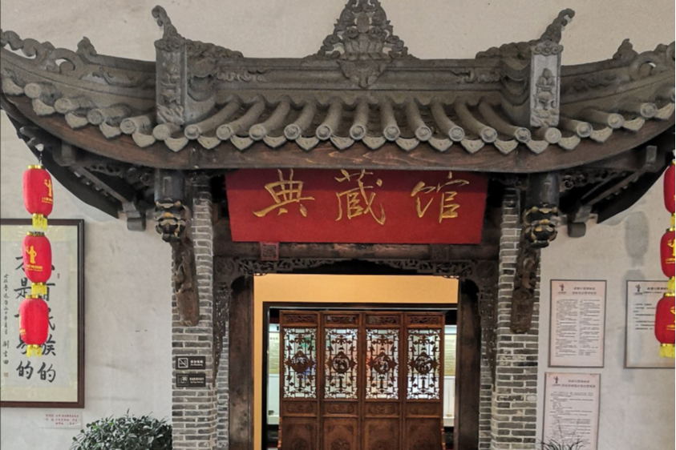
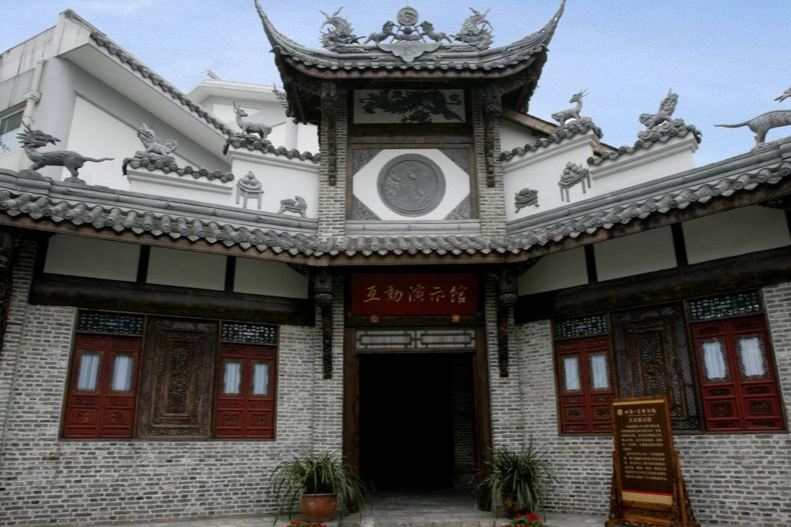

川菜流行之下非遗技艺的传承与保护。
认识川菜
川菜是中国汉族传统的四大菜系之一、中国八大菜系之一。川菜有着本土川菜与海派川菜之分，本土川菜中，四川菜系又包括川味菜肴、面点小吃、火锅等。
川菜分为三派：蓉派（上河帮）、渝派（下河帮）、盐帮派（小河帮）。上河帮川菜即以川西成都、乐山为中心地区的川菜；小河帮川菜即以川南自贡为中心的盐帮菜，同时包括宜宾菜、泸州菜和内江菜。下河帮川菜即以老川东地区达州菜、重庆菜、万州菜为代表的江湖菜。三者共同组成川菜三大主流地方风味流派分支菜系，代表川菜发展最高艺术水平。
川菜以取材广泛，调味多变，菜式多样，口味清鲜，醇浓并重，以善用麻辣调味著称，并以别具一格的烹调方法和浓郁的地方风味闻名，融会了东南西北各方的特点，博采众家之长，善于吸收和创新。
明末清初，辣椒传入，直至清末，风味特点逐渐定型，并在新中国成立后得到创新发展，川菜以家常菜为主，高端菜为辅，取材多为日常百味，也不乏山珍海鲜。其特点为：“善用三椒”、“一菜一格，百菜百味”；口味多变，包含鱼香、家常、麻辣、红油、蒜泥、姜汁、陈皮、芥末、纯甜、怪味等24种口味。代表菜品有鱼香肉丝、宫保鸡丁、水煮肉片、夫妻肺片、麻婆豆腐、回锅肉、泡椒凤爪、灯影牛肉、口水鸡、香辣虾、麻辣鸡块、重庆火锅、鸡豆花、板栗烧鸡、辣子鸡等。
川菜分类
新常态下对现代川菜理论体系的重新构建，包括川菜三派的划分，是在已有定论的上河帮，小河帮，下河帮的基础上，规范化完整表述为：上河帮川菜即以川西成都、乐山为中心地区的蓉派川菜，其特点以亲民平和，调味丰富，口味相对清淡，多传统菜品；小河帮川菜即以川南自贡为中心的盐帮菜，同时包括宜宾菜、泸州菜和内江菜，其特点是味厚、味重、味丰为其鲜明特色；下河帮川菜即以达州菜、重庆菜、万州菜为代表的川菜。三者共同组成川菜三大主流地方风味流派分支菜系，代表川菜发展最高艺术水平。
- 上河帮
-
以川西、成都、乐山为中心的。
- 小河帮
-
以川南、自贡、内江、泸州、宜宾为代表的。
- 下河帮
-
以川东、重庆、万州、达州为中心的。
川菜风味包括成都、重庆、乐山、自贡、泸州、宜宾、南充等地方菜的特色，主要特点在于味型多样，即复合味的运用。辣椒、胡椒、花椒、豆瓣酱等是主要调味品，不同的配比，配出了麻辣、酸辣、椒麻、麻酱、蒜泥、芥末、红油、糖醋、鱼香、怪味等各种味型，无不厚实醇浓，具有“一菜一格”、“百菜百味”的特殊风味，各式菜点无不脍炙人口。川菜在烹调方法上，有炒、煎、干烧、炸、熏、泡、炖、焖、烩、贴、爆等三十八种之多。
在口味上特别讲究色、香、味、形、兼有南北之长，以味的多、广、厚著称。历来有“七味”（甜、酸、麻、辣、苦、香、咸），八滋（干烧、酸、辣、鱼香、干煸、怪味、椒麻、红油）之说。
川菜系因此具有取材广泛、调味多样、菜式适应性强三个特征。由筵席菜、大众便餐菜、家常菜、三蒸九扣菜、风味小吃等五个大类组成一个完整的风味体系。
在国际上享有“食在中国，味在四川”的美誉；其中最负盛名的菜肴有：干烧岩鲤、干烧桂鱼、鱼香肉丝、廖排骨、怪味鸡、宫保鸡丁、五香卤排骨、粉蒸牛肉、麻婆豆腐、毛肚火锅、干煽牛肉丝、灯影牛肉、担担面、赖汤圆、龙抄手等；川菜中六大名菜是：鱼香肉丝、宫保鸡丁、夫妻肺片、麻婆豆腐、回锅肉、东坡肘子、开水白菜等。
传统派系
川菜派系初步形成于近代，近代川菜有上河帮、下河帮、大河帮、小河帮、自内帮之分。其中上河帮指岷江流域成都、乐山一带的川菜；下河帮指川江下游重庆、达州、万州一带的川菜；大河帮指长江上游泸州、宜宾一带的川菜；小河帮指嘉陵江和川北地区南充、绵阳一带的川菜；自内帮指自贡、内江一带的川菜。
当代川菜派系分本土川菜与海派川菜，本土川菜以三派论为主，分上河帮、下河帮、小河帮。
上河帮
上河帮川菜以成都官府菜、乐山菜为核心，其特点以亲民平和，选材丰富，口味相对清淡，善用豆瓣与糖类调味，是流传最为广泛的四川菜。上河帮川菜讲求用料精细准确，严格以传统经典菜谱为准，其味温和，绵香悠长，同时集中了川菜中的宫廷菜、公馆菜之类的高档官府菜，通常菜品起源颇具典故。精致细腻，多为流传久远的传统川菜，旧时历来作为四川总督与将军衙门的官府菜。
名厨黄敬临在清宫御膳房时创制的高级清汤菜，常常用于比喻厨师厨艺最高等级的「开水白菜」便是成都川菜登封造极的菜式。老成都公馆菜也是川菜中清淡高档菜的代表，“一菜一格，百菜百味”的“御府养生菜”，代表菜如香橙虫草鸭、醪糟红烧肉、刘公雅鱼等等。
著名菜品有开水白菜、麻婆豆腐、宫保鸡丁、青城山白果炖鸡、夫妻肺片、蚂蚁上树、蒜泥白肉、芙蓉鸡片、锅巴肉片、白油豆腐、烧白（甜烧白）、鱼香系列（肉丝、茄子）、鲃泥鳅系列（石锅鲃泥鳅）、盐煎肉、干煸鳝片、鳝段粉丝、酸辣鸭血、冷锅鱼、甜皮鸭、东坡肘子、东坡墨鱼、清蒸江团、跷脚牛肉、西坝豆腐、魔芋系列（雪魔芋、魔芋烧鸭）、简阳羊肉汤、雅安雅鱼全席宴等，涉及到的上河帮火锅吃法有串串香，干锅有盆盆鸡等。川北绵阳广元的饮食风格与成都乐山完全两样。
近些年，上河帮以海鲜食材及东部河鲜为原料创制了新派川菜，如香辣蟹，碧绿椒麻桂鱼、卞氏菜根香的泡椒墨鱼仔和泡菜半汤桂鱼；以四川山珍为主的山珍川菜，譬如：石渠白菌炖土鸡、松茸素鳕鱼卷佐素鱼香茄子、松茸鸭翅。
四川各地小吃通常也被看作是川菜的重要组成部分。川菜小吃主要以上河帮小吃为主，以川西坝子为中心，凉粉系列（川北凉粉、伤心凉粉）、川北米粉（如绵阳米粉、绵竹羊肉粉）、红薯粉系列（肥肠粉）、锅盔系列（卤肉锅盔、肺片锅盔等）、豆花系列（泉水豆花、谭豆花、牛肉豆花、馓子豆花、冰醉豆花、酸辣豆花）、面食系列（担担面、香辣牛肉面、干绍面、炒面、凉面）、青城山老腊肉、川式香肠、蛋烘糕、银鱼烘蛋、叶儿耙、黄耙、丁丁糖、三大炮、冒菜、盐边牛肉、冷锅串串、盐包蛋、彭山甜皮鸭、乐山甜皮鸭、怪味鸡块、棒棒鸡、嘉州百味鸡、乐山夹丝豆腐干、乐山豆腐脑、薄饼、九味鸡、乐山钵钵鸡、夫妻肺片、樟茶鸭、怪味兔头、红星兔丁、陈皮兔丁，以创始人姓氏命名的赖汤圆、龙抄手、钟水饺、杨鸡肉、蒋排骨、韩包子、温府豆汤饭、老妈蹄花、广汉缠丝兔、青城山老腊肉等。
上河帮菜系由于口味略温和，火锅主要为清油火锅、梭边鱼火锅。
小河帮
小河帮以自贡盐帮菜、内江糖帮菜、泸州河鲜菜、宜宾三江菜共同组成，其特点是大气，怪异，高端（其原因是盐商）。自贡盐帮菜又分为盐商菜、盐工菜、会馆菜三大支系，以麻辣味、辛辣味、甜酸味为三大类别。盐帮菜以味厚、味重、味丰为其鲜明的特色。最为注重和讲究调味。除具备川菜“百菜百味、烹调技法多样”的传统之外，更具有“味厚香浓、辣鲜刺激”的特点。盐帮菜善用椒姜，料广量重，选材精道，煎、煸、烧、炒，自成一格；煮、炖、炸、熘，各有章法。尤擅水煮与活渡，形成了区别于其他菜系的鲜明风味和品位。在盐帮菜的嬗变和演进中，积淀了一大批知名菜品，人见人爱，其中一些菜品更不胫而走，纳入了川菜大系，摆上了异地餐桌，清末盐商李琼圃撰著了《琼圃菜谱》，便记载了各色盐帮菜的烹饪要诀，惜已失传。盐帮菜的代表性菜品不下百种。这里仅列举其中部分：水煮牛肉、火鞭子牛肉、富顺豆花、火爆黄喉、牛佛烘肘、粉蒸牛肉（或名牛肉蒸笼）、风萝卜蹄花汤、芙蓉乌鱼片、无汁葱烧鲤鱼（又名“合浦还珠”）、火爆毛肚、谢家黄凉粉、郑抄手、酸辣冲菜、李家湾退鳅鱼、冷吃兔、冷吃牛肉的冷吃系列、富顺豆花、跳水鱼、鲜锅兔、鲜椒兔等等。
除了自贡盐帮菜，其它川南城市也各具特色，例如内江有著名的球溪鲶鱼系列，小河帮小吃也非常有名，宜宾特色：宜宾燃面、竹海名菜、李庄白肉、猪儿粑、泥溪芝麻糕、柏溪潮糕、兔火锅。泸州特色小吃：白糕、伦敦糕、黄粑、猪儿粑、窖沙珍珠丸、两河桃片、合江烤鱼、姜氏卤菜一绝、老牌鸭子、朱氏杂酱。
小河帮同时也是水煮技法的发源地，自古就有水煮牛肉的吃法。水煮技法逐渐在川菜中成为一种主流烹饪方式，成就了水煮鱼、水煮肉片等水煮系列精品川菜。
小河帮则发挥的重辣的特点，火锅有鲜锅兔火锅，同时发明了冷吃做法，譬如冷锅鱼，在引入到成都后，经由这个饮食重镇发扬光大成了一个非常流行的新吃法。
下河帮
下河帮菜系在抗战期间因为有各地名厨的碰撞融合有了很大的发展。其特点为大方粗犷，善用泡椒与酸菜调味，以花样翻新迅速、用料大胆、不拘泥于材料著称。渝派川菜以传统江湖菜为主，如麻辣火锅、酸菜鱼、辣子鸡、麻辣鱼、酸萝卜老鸭汤、泡椒系列、牛尾汤、豆花饭、陈皮兔丁、烧白、灯影牛肉、合川肉片、蒜泥白肉等等。
由于川东重庆达州等地区多山，加上长江边码头文化，生发出不拘一格的传扬风格。同时，受到了民国时期和三线建设时期大量江浙移民的影响，部分川菜易学易做，开胃下饭，因其平民化和能大开胃口的特点，近几年来渝派川菜风靡全国，引领了川菜发展潮流。
其代表作有辣子鸡、辣子田螺、辣子肥肠、豆瓣虾、香辣贝为代表的辣子系列，泡椒牛蛙、泡椒墨鱼仔、泡椒兔、泡椒黄喉等为代表的泡椒系列，美蛙鱼头、石锅鱼等干菜炖烧系列（多以干豇豆为主），酸菜鱼、酸菜鸡等为代表的酸菜系列，水煮肉片和水煮鱼为代表的水煮系列，泉水鸡、烧鸡公、芋儿鸡和啤酒鸭为代表的干烧系列，青（尖）椒鸡、青（尖）椒兔、青（尖）鱼等为代表的双椒系列，万州烤鱼、纸包鱼为代表的烤鱼系列等等。
下河帮小吃主要是以重庆、万州、达州等传统川东城市为中心，譬如重庆酸辣粉、凉面、口水鸡、格格、涪陵油醪糟、涪陵榨菜、达州包面、七星椒、大风羊肉、石梯蒸鱼、手撕鸭、江阳酸辣鸡、尖椒肥肠、面筋团、干烧岩鲤、永川豆豉、忠县豆腐乳、合川桃片、江津米花糖、灯影牛肉、鬼城麻辣鸡块、吴抄手、鸡丝凉面、碗杂面、老麻抄手、泡椒凤爪等等。
发展历史
古代川菜
古代川菜，其存在时段为先秦的巴国和蜀国至清代的鸦片战争以前。在这个时期，川菜经历了孕育萌芽，川菜菜系初步形成和成熟的发展时期。
- 先秦时期
-
从巴蜀文化的出土文物就可见川菜的发展源远流长。商代以前，巴蜀就已经能制出精美的陶质食器。巫山大溪遗址出土的新石器晚期的陶器中，有餐饮器具鼎、釜、罐、杯、盘、碗、盒、豆、簋、壶等。考古学家认为，大溪文化与中原仰韶文化有同等价值。到商周时期，巴蜀不但制作出了精美的青铜餐饮器具，而且已有较为丰富的烹饪原料和一定数量的菜肴品种，并组合成筵宴。川菜的萌芽可见一斑。
在广汉三星堆遗址出土的商周时期青铜器中已有精美的罍、樽、盘、罐等餐饮器具。四川新都战国墓中出土了多种古代生活宴饮器具，有意装食物的豆、盘等，有蒸煮食物的瓮、鼎等，造型都颇为精美大方，工艺程度已经达到相当高的水平，说明在公元前1000多年，巴蜀先人已经懂得“美食美器“对于调和菜肴的作用了。商周时期，是川菜的萌芽孕育时期。
- 秦汉时期
-
秦、西汉时期四川饮食文化尚未出现地区性特色：秦灭蜀到西汉末年的三百余年间，由于第一次移民以后蜀经济的发展，成都的繁荣导致了物产的丰富与饮食业的兴旺，这就是扬雄《蜀都赋》里说的：“调夫五味，甘甜之和，芍药之羹，江东鲐鲍，陇西牛羊”及引具有珍稀野禽野兽“五肉七菜”的宴菜。从这几句简短的话，我们可以推断，古典四川菜在西汉晚期时已经初具规模，而且中原烹饪文化的精神-“五味调和”已经成为四川至少上层人士饮食的基调；再就是“江东鲐鲍，陇西牛羊”说明了四川烹饪原料不是单纯就地选取，而是通过水陆运输从长江下游和秦岭以西获得。但是，我们应该注意到，上述描述暗示了这一时期至少上层饮食还未出现地区性的特征，如果有，也是前一节里谈到的属于下层人民继承的战国以前的“益州鹿（歹委）”这样的不卫生，不文明陋习。在这以前，从《史记》里记载的“文君当垆”可以推想到蜀地的餐饮业也已经出现。总的说来，和四川在秦汉以后，很少表现出蜀古文化遗留一样，这一时期的四川饮食文化也基本上完全被秦汉先进文化所同化，尚未形成自己的地区特色。
- 汉末魏晋
-
古典川蜀烹调与中原、江南烹饪的分野出现于东汉末与魏晋时期。
东汉建立以后，四川的经济文化继续发展，它的烹饪文化开始表现出自己的特色。第二节里介绍的忠县东汉墓葬中的“庖厨俑”说明了川蜀烹饪的成熟景象，其中水饺的出现尤其应该引起我们的注意。水饺应该理解为馄饨的变种，两汉时期馄饨被称为“餦馄”，是通称“饼”的一种，或者叫做汤饼。东汉刘熙《释名》“饼”中已提及“蒸饼、汤饼、蝎饼、髓饼、金饼、索饼”等饼类，但我们并不能准确理解汤饼的含义，我们只知道，馄饨或者水饺应该是小麦去麸以后的面粉制作成的，要求面粉加工质量很高，由此我们可以推测至迟在东汉时期，四川地区的农业加工技术和中原地区一样，已经发展到相当的阶段。馒头，或称“曼头”，作为一种方便面食，应该是上面所引《释名》句子里所谓“蒸饼”的一种，在东汉末已经出现了，但为什么要被高承归之于蜀汉诸葛亮的发明？这里除了名人效应以外，可能还因为蜀地曼头首创加入肉馅，而且在形状上略似人首的缘故，和刘熙时的蒸饼当有所不同。魏晋时候可能托名曹操的人写的《魏武四时食制》谈到当时川蜀的烹饪，说：“郫县子鱼，黄鳞赤尾，出稻田，可以为酱”；说黄鱼“大数百斤，骨软可食，出江阳、犍为。”还提到“蒸鲇”，可见当时川蜀地方已有清蒸鲶鱼的菜式了。不管怎么说，都说明了川蜀地区的烹饪水平在东汉末、三国时期有了相当的提高，并且以“喜着饴蜜”为中原所知，后来在东晋时期，再次为常璩的“尚滋味、好辛香”所确定。
三国时，成都作为鼎足而三国家之一的首都，登上了中国的政治舞台，第二次移民运动促成了川蜀经济文化的继续发展，在此期间，后主刘禅大兴土木，“颇出游观，增广声乐”，相应地，在高层饮食水平上有所体现。这时候的成都，已经成为“既丽且崇”，“外则轨躅八达，里闬对出，比屋连甍，千庑万屋。”繁荣的全国大都会了。西晋时，左思根据文献和询问在洛阳的蜀中人士所写出的《蜀都赋》，盛赞蜀中物产丰富，所谓“蒟蒻茱萸，瓜畴芋区，甘蔗辛姜，阳蓲阴敷。”因此才有成都宴会上的“肴槅四陈，觞以清（酉票）”。西晋诗人张载《登成都白菟楼》诗里也谈到蜀都饮食之丰盛：“鼎食随时进。百和妙且殊。”值得我们注意的是，“尚滋味、好辛香”的烹饪风格与“调夫五味”的精神是冲突的，由此我们结论：魏晋时期的古典川菜显现出与西汉时代风格不同的特色，所以我们认为，古典蜀菜与全国其他菜系的分野，应该在东汉末和魏晋之时，而不是秦汉之际。
- 隋唐五代
-
隋、唐、五代时期川蜀饮食文化的繁荣。
西晋末川蜀地区的战乱，导致了大批川蜀地区人民的东迁，使得经济文化遭到一定程度的破坏，到了隋唐时期，统一大帝国的建立使得生产得到恢复，经济得到了空前发展。经济大恢复与生活富裕下的文化充实始于隋占领川蜀地区以后，隋徙封成都的越王杨秀在成都大兴土木，扩建成都城垣，说明至隋统一中国时，蜀地区的人口增加，蜀汉时成都城区规模已不敷居住。杨秀“渐奢侈”对成都饮食消闲文化起到了表率作用。其后自安史之乱起，蜀成为唐王朝的后院，成都曾短暂地被改名为“南京”，随后成都在中唐和晚唐再次经由韦皋和高骈进行两次扩城，成为一个相当规模的大城市了。唐中后期的动乱里，四川一直是世族、著名文人避难的地方，这就为文化交流，包括饮食水平的提高创造了条件。
这一时川蜀饮食水平达到了新的高度，在唐人诗里有所反映，例如杜甫在四川夔府时，曾作《槐叶冷淘》诗：“青青高槐叶，采掇会中厨。新面来近市，汁滓宛相俱。入鼎资过熟，加餐愁欲无。碧鲜俱照箸，香饭兼苞芦。”“冷淘”是一种凉面，早在南北朝时期即已出现其雏形，盛唐时成为宫廷宴会的时令饮食，杜甫能在夔府吃到冷淘，说明京师盛宴里的佳肴业已流传到四川民间。杜甫又曾对四川绵州“饔子左右挥霜刀，鲂鱼金盘白雪高”的烹鱼技术非常欣赏。繁荣的川蜀经济、商品的交流给了地区性饮食文化以充分的支持，张籍在《成都曲》中有“万里桥边多酒家，游人爱向谁家宿”、雍陶“自到成都烧酒熟，不思身更如长安”的描述。李商隐有“美酒成都堪送老，当炉仍是卓文君”的句子都描述了当时四川饮食的丰盛。
特别在第三次移民后的五代时期，前后两蜀的经济文化达到了又一个高潮。这是因为迁徙到四川的高文化素质的世族人士在数量上超过了前两次，使川蜀成为当时全国中原世族避难的两个地区之一。
《清异录》载：“孟蜀尚食，掌《食典》一百卷，有赐绯羊。其法：以红曲煮肉，紧卷石镇，深入酒骨淹透，切如纸薄乃进。”从《齐民要术》里，我们看到直接用酒处理肉类的烹饪只有蒸缶（下四点水）小猪，绯羊的制作方法似发扬了此种方法，现代的“东坡肉”也继承了这一方法，用酒处理猪肉。从花蕊夫人的宫词里，我们知道当时饮宴方式丰富多彩，有了“船宴”。《食典》以其高达一百卷的数量，应该是隋唐至五代期间内容最浩大的食谱书，虽然它仅反映了皇家御厨的厨艺，但可以窥探出巴蜀烹饪文化在五代时期的五彩缤纷。如今，我们已无从知道失传了的孟蜀《食典》的具体内容，只能从花蕊夫人的宫词里可以窥探到当时四川高层人士宴会种类的新奇和饮食方式的精巧与别开生面。
- 两宋时期
-
两宋时期，古典川菜成为全国的独立菜系。
两宋四川继续保持经济文化的繁荣。北宋时，成都游宴之风甚炽，北宋仁宗时宋祁知成都，更把游宴活动开展得多彩多姿。宋祁著《益部方物略记》，第一个向四川以外的地区详细介绍四川奇异的土特产和部分烹饪技巧。以后，苏轼第一个身体力行，创造性把四川烹饪发扬光大到中原、江南和岭南地区，关于苏轼的烹饪实践，我们可以从多本他的诗词、词话和宋人笔记里发现。
业余烹调爱好者，浙江人陆游长期在四川为官，对川菜兴味浓厚。唐安的薏米，新津的韭黄，彭山的烧鳖，成都的蒸鸡，新都的蔬菜，都给他留下了难忘的印象，离蜀多年后还念念不忘。晚年曾在《蔬食戏作》（注44）中咏出“还吴此味那复有”的动情诗句，在《饭罢戏作》一诗中，他说：“东门买彘骨，醢酱点橙薤。蒸鸡最知名，美不数鱼鳖。”“彘”即“猪”，“彘骨”是猪排。排骨用加有橙薤等香料拌和的酸酱烹制或蘸美至极。此外在诗中称道了四川的韭黄、粽子、甲鱼羹等食品。陆游的《剑南诗稿》谈到四川饮食的竟达50多首，他的作品让我们从另一个角度观察到四川各地民间美食的绚丽。
两宋四川饮食的重大成就，就在于其烹饪开始被送到境外，让境外的川人和不是川人的普通人能在专门的食店里吃到具有地方特色的风味饮食，这是四川菜第一次成为一个独立的烹调体系的伊始。这就是所谓北宋的“川饭”，这些川饭店，主要经销“插肉面、大燠面、大小抹肉淘、煎燠肉、杂煎事件、生熟烧饭。”南宋的“川饭分茶”。从上述两书的内容可以发现，川菜出川主要经营大众化的饮食，尤其是面食，而面食里占主要成分的品种是面条，附带也有一些快餐类肉食。今日上海、杭州面条里的“燠面”或“沃面”很可能是川饭面条的遗存，因为我们在《东京梦华录》（写于南宋初年）里找不到第二处有记载燠面的地方，根据《都城纪胜.食店》，南渡以后的南食店和川饭分茶事实上成了面食店的代称，因此北宋开封川饭店的燠面在南渡一百五十年以后很可能变成一种固定的江南面条了。而我们知道，现代的燠面已经和现代川菜面条大不一样了。这些烹调的具体调味特色，而且没有发现其厚味、辛香的特色。从《梦梁录》的说明中，我们知道川饭的出现原因是，在北宋时期，为照顾在汴京居住的蜀中士大夫的口味，“谓其不便北食故耳。”南渡一百五十年以后，这些随南渡开设到临安的川饭店，已经“无南北之分矣”，说明这些川味面食曾与中原烹调有较大差异。
换句话说，只有到了北宋，川菜才单独成为一个全国有影响力的菜系。我们可以总结到，古典川菜肇始于东汉末与魏晋之交时期，定型同时达到高峰是在北宋时期，定型过程几乎花费了一千年时间。
- 元明清初
-
后到清代中期开始恢复和进一步发展。元代时，四川经历长时间战乱，经济和文化受到严重摧残，直到明代才有所恢复；明末清初，再遭空前浩劫，人口锐减，经济萧条，川菜发展陷入低谷。
《清圣祖实录》卷六言：“川省初定，士满人稀”。清朝统治者为重振四川经济，采取了包括移民入川在内的一系列措施，其中最具影响力的便是“湖广填四川”。湖广和其他东南地区、西北地区10余个省的移民带来了先进的生产技术与农作物新品种，使四川经济得以迅速恢复，并丰富了四川烹饪原料和调味料。如番薯、辣椒、番茄、土豆、玉米等是移民带入的新品种。其中，辣椒的引入契合了四川人因气候、地理条件和口味习惯而早已形成的“好辛香”传统，使得辣椒在川菜制作中被广泛运用，促进了川菜最终形成独具一格的风味特色。可以说，辣椒的引入和广泛运用对川菜的发展起到了具有划时代意义的重要作用。同时，移民与四川原住民共同生产、生活，促进了包括菜肴制作及饮食习俗在内的各方面相互交融，使川人原本崇尚饮食的习俗得以发扬光大，对饮食的需求不断变化和增长。频繁的人员流动也为四川引入了外省菜点的制作技法和手艺精湛的厨师。
清乾隆时期，宦游浙江的四川罗江人李化楠在做官的多年期间，注意在闲暇时间收集家厨、主妇的烹饪经验。后来，他的儿子李调元将他收集的厨艺经验整理出来，刻版为食经书《醒园录》。《醒园录》是一部清代重要的食书，不同于同时和以前清朝类似书的概略，它详细记载了烹调的原料选择和烹饪操作程序，对于后来家厨和主妇中馈技艺的提高帮助极大。
这个时候的四川经济还处于腾飞前夕，烹饪技艺简单、粗糙，它受到来自湖广、江西和陕西移民带进川的下层饮食风格的影响，实际上是各地中馈风味的混合，其精致者以“肉八碗”、“九大碗”为代表。所谓肉八碗、九大碗，是指：大杂烩、红烧肉、姜汁鸡、烩酥肉、烧明笋、粉蒸肉、咸烧白、夹沙肉、蒸肘子。这九样菜里，我们看到的主要还是受鲁菜影响下的风格，而古典川菜的特色大约只在姜汁鸡和夹沙肉里还保持着，前者充分利用了川姜的辛香，后者突出了甜腻，古典川菜里的麻味至少已经不突出了。这就是历史学家蒙文通认为的，现代川菜的初期受鲁菜影响很大的理由。四川乡土作家李劼人在《说丧葬》里向读者提供了他保存的其祖上在祭祀中的几份清单，一份道光二十一年（1829）的食品采购单上罗列了在丧葬的祭祀和宴请来宾里所购买的所有食物原料和调料，其中没有一样是辣椒或辣椒制品。另一份同治元年（1862）年的席单上详细列出了菜品，也没有一样含辣的菜，其中列在前面的是“京品”-大杂办，这个“京品”正是受鲁菜影响下发展的北京菜式，而事实上，它们正是满汉全席在民间的简化版。
《醒园录》中系统地搜集了江浙家厨和中馈菜的38种烹调方法，如炒、滑、爆、煸、溜、炝、炸、煮、烫、糁、煎、蒙、贴、酿、卷、蒸、烧、焖、炖、摊、煨、烩、淖、烤、烘、粘、氽、糟、醉、冲等，以及冷菜类的拌、卤、熏、腌、腊、冻、酱等。因为这些名目繁多的烹调方法密切地同中下层烹调紧密相联系，显然对后来崛起的现代川菜起到极大的促进作用。《醒园录》使现代川菜在中下层上受到来自于江浙菜系的影响。
近代川菜
近代川菜，时间段为清道光二十年（1840年）鸦片战争至1949年。这一时期，川菜不断兼收并，川菜菜系在清代后期最终形成，成为中国主要的四大地方风味菜系之一，并在民国时期稳步发展。
鸦片战争后，西方文化伴随着坚船利炮逐渐进人中国。四川地处西部内陆，没有受到战乱的直接侵扰，社会经济和百姓生活相对稳定，使得川菜持续发展，出现了大量的特色菜点和名店名师，筵宴不断兴盛，饮食市场日益发达。 [4] 出现了普遍的繁荣景象，曾经引起了在中国访问的德国地理学家李希霍芬的注意，李希霍芬在他的通信集里写道：“在正常情况下，四川显得处处存在着对生活物资充裕的满足和幸福，这在中国其他省份是不常见的”。这一时期，起初是因为东南战事，下江农业残败，四川第一次取代两湖，成为清政府最大的粮赋省，因此清政府开始重视四川，向四川派出了有影响的官员，如丁宝桢、张之洞、芩春煊、锡良等人，他们在四川开始了初期洋务运动和新政、兴学，使这一时期四川的学术文化活动出现了自从南宋末以来，沉寂了七百年以后第一次飞跃，无论经济，还是文化都开始在全国崭露头角。正是由于清末来川的北方和江浙官员的提倡和南在成渝两地的开设而使现代上层川菜演进得到强化。
清宣统元年（1909年）傅崇榘在《成都通览》一书巾中不仅详细记载了成都之包席馆、南馆、炒菜馆及饭馆、食品店等各类饮食店铺的特色、众多知名者，还记载了当时成都各类传食店铺和百姓家常的1328种风味菜点及部分菜点的制法，该书的“成都之筵宴所“中载有当时成都城内外的著名筵席场所21处。
清末徐珂《清稗类钞·饮食类》说：“肴馔之有特色者，为京师、山东、四川、广东、福建、江宁、苏州、镇江、扬州、淮安。
民国时期，特别是抗日战争时期，四川成为抗战大后方，重庆更成为国民政府的陪都，大批外地官员、富商和各界人士内迁入四川的重庆、成都等地，全国几乎各大菜系的厨师、餐馆特色菜点及其烹饪制法甚至西餐等都随之入川。据民国32年（1943年）重庆的中西餐业同业公会会员名册统计，重庆市区已有中西餐馆260家。在成都也有许多经营外地风味乃至西餐的著名餐馆。这一时期，四川境内名厨云集、名店荟萃，为川菜与其他菜系的交融创造了条件，不仅涌现了许多川菜名店和名厨，如荣乐园的蓝光鉴、颐之时的罗国荣等一批近现代川菜的宗师，出现了分工相对固定的行业帮派，如饭食帮、燕蒸帮、面食帮、甜食帮等。而且众多的川菜制作者还创制由一大批名菜名点，营造了近现代川菜兴旺局面。主要特色有三点。
一是烹任特色突出。首先，用料广泛，博采众长。近现代川菜不仅充分发现和使用本地出产的一众多优质烹饪原料，而且大量引进与采用外地、外国的烹饪原料。其次，调味精妙善用麻辣。辣椒的引进和广泛应用是促进川菜发展并形成独具一格菜肴的重要条件之一。辣椒成就了川菜。此时期还增加了如郫县豆瓣、保宁醋、南充冬菜、宜宾芽菜、永川豆豉等品类丰富风味独特的酿制品，使川菜在调味上具有了精妙多变并且善用麻辣的特点。再次，烹法多样，别具一格。据《成都通览》所载，清代川菜普遍使用的烹饪法已有三大类、20余种，每种具体的烹饪法下又派生出许多方法。其中，炒法下又分小炒，烧法下细分干烧、家常烧，都是川菜最具特色和最擅长的烹饪方法。
二是风味体系完整、多元。这一时期，四川大部分地区，各种类型饮食发展较为均衡，川味菜点数量众多，品种齐全，使得川菜形成了结构完整、风格多样的风味体系。从地域分布上，川菜有上河帮、下河帮、大河帮、小河帮、自内帮之分。其中上河帮指岷江流域成都、乐山一带的川菜；下河帮指川江下游重庆、达州、万州一带的川菜；大河帮指长江上游泸州、宜宾一带的川菜；小河帮指嘉陵江和川北地区南充、绵阳一带的川菜；自内帮指自贡、内江一带的川菜。从消费对象和属性来看，当时川菜风味体系由筵席菜、三蒸九扣菜、大众便餐菜、家常菜、风味小吃五大类构成。各类均有不同的特色和品种。《成都通览》中，记载筵席菜300余种、家常菜上百种、面点小吃数百种，如甜烧白、粉蒸肉片荷叶鲜肉等三蒸九扣菜以及韭黄炒肉、芋头烧肉等众多大众便餐菜。
三是饮食市场日益发达。主要形成了适应各种消费水平、口味爱好和习惯等的多层次、全方位较为完善的市场格局。有种类繁多、档次齐全的综合性饮食店，有异彩纷呈的专业化饮食店，还有自由流动的饮食摊点和商贩。在经营方式与经营档次上又分为两类：第一类是只承办筵席的饮食店，主要有包席馆，通常店堂面积大，陈设豪华，如正兴园。第二类是既办筵席又经营零餐的饮食店，有高中低档之分。其中，南馆是中高档饮食店的代表，最初主要经营南方菜肴，但很快被川菜融合吸收，受到川人喜爱。大众化的炒菜馆及饭馆是低档饮食店的代表。
当代川菜
当代川菜，时段为1949年中华人民共和国成立以后至20世纪初。在这个时期，川菜在经历了曲折发展之后走上繁荣创新的跨越式发展之路。
中华人民共和国成立之初，百废待兴，四川各级人民政府在恢复国民经济的同时，采取了鼓励经营、互助合作、公私合营等措施发展饮食业。1956年后，形成了以国营、公私合营、合作为主的饮食经营体系。各地市州一些著名的川菜馆相继恢复并新建立了一批大型餐厅，以满足消费者需要。
1959年整理的由蓝光鉴审阅、孔道生、张松云口述的四川《满汉全席》，收录了成都的满汉全席菜单65种。1960年中国轻工业出版社出版的《中国名菜谱（第七辑）》系川菜专辑。
1958-1978年的20年时间里，四川不少老店、名店被砸，被迫改名歇业，名师、名菜点被否定推翻，饮食业仅保留国营和集体餐馆，出现了餐馆饭菜难吃、凭票供应、吃饭难的状况。据统计，1978年，四川省的饮食服务业网点仅有2.8万个，比1957年减少75%，经营网点少，品种单调，川菜的发展受到严重影响。
1978年中共十一届三中全会后，川菜迎来了改革发展、创新的机遇。20世纪80年代，国家把商业和饮食服务业归属为国民经济发展的“第三产业”，省委省政府高度重视，加强领导，制定，实施了“走出去，把川菜推向世界”的发展战略，川菜迎来快速发展时期。
菜系特色
口味分类
川菜的味相当丰富，号称百菜百味。其中最为著名的当数鱼香、麻辣、辣子、陈皮、椒麻、怪味、酸辣诸味。调制这些复合味有很大的难度，但若掌握了它们的配方及调制方法，基本上也能学得八九不离十。下面分别介绍如下（按其重量比例作为单位）。
- 鱼香味
-
葱姜蒜泥1.泡椒0.5.四川豆瓣酱2.糖1.5.醋1.5.酱油、酒适量。调法是先煸葱、姜、蒜、泡椒，再煸豆瓣酱出红油，与其他调料混合。色红味甜、酸、辣均衡，都不算太浓。可做鱼香肉丝、鱼香茄子、鱼香蘸汁等。
- 麻辣味
-
花椒0.5或花椒粉0.2.干辣椒0.3.四川豆瓣酱3.糖1.醋1.葱、姜、蒜、酒、酱油适量。调法是先将干辣椒段炸至褐色，再下花椒炒香，煸葱姜蒜之后下其他调料。为取麻味，还可加些花椒粉。（油炸花椒起香，麻味来之于花椒粉）。特点是色泽金红，麻辣鲜香，有轻微的甜酸。可制麻辣鱼丁、麻婆豆腐等。
- 辣子味
-
四川豆瓣酱1.糖0.3.醋0.3.葱、姜、蒜及酱油、酒适量。调法是先下葱姜蒜煸香，再将豆瓣酱煸炒出红油，下其他料调和。特点是鲜辣中带有极微的甜酸味。可制辣子鸡丁，辣子鱼丁等菜。
- 陈皮味
-
花椒0.5.干辣椒1.四川豆瓣酱3.糖2.陈皮2.酱油、葱、姜、蒜、酒适量。调制法为先将干椒炸焦，再煸花椒出香味，如用陈皮块，亦加煸炒，若用烤干的陈皮碾成的粉，可在烹调近完毕时洒入。煸葱、姜、蒜出香味后再煸瓣酱，随后下料加汤及其他作料焖烧原料。口味特点是麻辣鲜香，有陈皮特有的芳香味，可制陈皮牛肉、陈皮鸡等。
- 椒麻味
-
葱白10.花椒2.酱油12.糖2.醋2.鲜汤少许。制法是将花椒用酒浸泡一夜，然后与葱白一起剁成细泥，加酱油、糖、醋等其他料调拌而成。特点是麻香鲜咸。可用于调拌椒麻允片、椒麻肚片等菜。
- 怪味
-
四川豆瓣酱1.芝麻酱1.糖0.8.醋0.8.花椒粉0.05.油1.葱、蒜泥各0.1.酱油、鲜汤适量。制法是先以油煸四川豆瓣酱至油变红，用鲜汤调开芝麻酱，再加上所有作料调拌均匀而成。特点是辣、麻、甜、酸、咸、鲜、香诸味融为一体，味觉非常丰富。可调制怪味鸡丁、怪味鸭片等等。
- 酸辣味
-
辣味有用于炒爆菜和用于烩菜之分，前者比例为：四川豆瓣酱1，糖0.6，醋0.9，葱、姜、蒜及酒、酱油、鲜汤、红油适量。制法是先煸葱、姜、蒜和豆瓣酱，再调和其他味料。后者比例为白胡椒粉0.8，醋6，葱花香菜末6，麻油少许。前者特点是酸辣而香，微有甜味，后者酸辣爽口，上口咸酸，下咽时始觉辣味。用于炒爆菜如酸辣鱿鱼卷、酸辣鱼片；烩菜如酸辣汤、酸辣烩鸡血等。
味型特点
川菜特点： 清鲜醇浓，麻辣辛香，一菜一格，百菜百味。
川菜有麻、辣、甜、咸、酸、苦六种。在六种基本味型的基础上，又可调配变化为多种复合味型，在川菜烹饪过程中，如能运用味的主次、浓淡、多寡，调配变化，加之选料、切配和烹调得当，即可获得色香味形俱佳的具有特殊风味的各种美味佳肴。
川菜特点是突出麻、辣、香、鲜、油大、味厚，重用“三椒”（辣椒、花椒、胡椒）和鲜姜。调味方法有干烧、鱼香、怪味、椒麻、红油、姜汁、糖醋、荔枝、蒜泥等复合味型，形成了川菜的特殊风味，享有“一菜一格，百菜百味”的美誉。
川菜的复合味型有20多种，如咸鲜味型、家常味型、麻辣味型、糊辣味型、鱼香味型、姜汁味型、怪味味型、椒麻味型、酸辣味型、红油味型、蒜泥味型、麻酱味型、酱香味型、烟香味型、荔枝味型、五香味型、香糟味型、糖醋味型、甜香味型、陈皮味型、芥末味型、咸甜味型、椒盐味型、糊辣荔枝味型、茄汁味型等等。
菜式特点
主要由高级宴会菜式、普通宴会菜式、大众便餐菜式和家常风味菜式四个部分组成。四类菜式既各具风格特色，又互相渗透和配合，形成一个完整的体系，对各地各阶层甚至对国外，都有广泛的适应性。
十大经典川菜
它的十大经典菜有：川味火锅、水煮鱼、回锅肉、麻婆豆腐、鱼香肉丝、水煮肉片、辣子鸡、酸菜鱼、宫保鸡丁、甜皮鸭。
文化传承
川菜博物馆
- 典藏馆
典藏馆以文物、典籍、图文陈列展示历史的川菜文化，游客可以了解川菜文化的起源、演变、发展及川菜文化的形成。在这里可以看到川菜在不同时期使用的不同器具，了解当时的生产力和人们的生活习惯以及当时的审美需求。川菜博物馆典藏馆展出了从战国至现代的3000多件川菜饮食器皿，这些藏品在使用功能上可分为煮食器、盛食器、酒器、用餐器、茶具，从材质上可分为青铜、牙骨、陶、瓷、铁器、木、竹等。另外，藏品中还包括了与川菜有关的文字介绍和书籍、图稿等。
- 川菜原料展示区
游客能够了解到多个品种的川菜原料以及蔬菜、家禽等无公害绿色产品。博物馆内的”川菜之魂“郫县豆瓣全部采用清朝的特制方法进行独家手工酿制，游客将在现场体验拥有三百余年历史的郫县豆瓣传统制作工艺。
- 灶王祠
灶王祠是传统川菜文化，以及四川民俗文化的组成部分。在民间，灶王司职“上天言好事，下界保平安”。敬灶王，崇食尚饮，感悟“一餐一饭，当思来之不易”，珍惜生活，与自然与社会和谐共处。
- 老川菜馆一条街
老川菜馆一条街是川菜的“清明上河图”。游客将在畅游老四川街景民风中领略川西民居建筑风格，同时可以在独立私密包间亲自体验正宗川菜制作工艺。
- 川菜原料加工工具展示区
展示了一系列先辈们曾使用过的一些川菜原料加工工具，让您可以从一个侧面了解我们的先辈们的生活场景。
- 互动演示馆
互动演示馆现场演示川菜的刀功、火候及成菜过程，是川菜非物质文化核心内容，它们是动态的、经验的、艺术的，只能通过演示的形式陈列。游客可以参与互动；川菜的香和味，游客能通过味觉亲自感受；游客还可以了解川菜的就餐形式：零餐、雅间、筵席。游客的互动将成为今天川菜文化的组成部分，游客的参与构成了今天的就餐形态。与一般餐馆把厨房藏起来不同，在我们这里把厨房放在正中央，通过相关的互动演示和参与，来展示川菜技艺这种非物质文化。
- 品茗休闲馆
品茗休闲馆体现了川菜文化“茶饭相随、饮食相依”的特点，川菜文化是燕集文化，宴饮、娱乐、休闲融为一体。饮茶品茗是川菜文化的组成部分。川人饮茶形式不拘一格：春秋之季在阳光之下喝坝坝茶；盛夏之时在树林中、在林荫下饮茶纳凉；茶房品茗则四季皆宜。在这里，游客都可以得到体验。
- “玩做菜”文化互动体验之旅
川菜博物馆是世界上唯一“可以吃的博物馆”，带来全新的参观理念——参观除了用眼和耳之外，还可以用口和鼻。互动演示馆现场演示川菜的刀功、火候及成菜过程，是川菜非物质文化的核心内容，它们是动态的、经验的、艺术的，只能通过演示的形式陈列。游客的互动是今天川菜文化的重要组成部分，游客的参与构成了今天的就餐形态。
在互动演示馆，游客将由体验师指导，亲手制作几道经典川菜菜品。我馆首席烹饪师作为《川菜》杂志的封面人物，曾为世界500强总经理讲授川菜文化、传授传统川菜的烹饪技艺。游客将了解鲜为人知的川菜制作工艺秘诀，感受正宗川菜口味、味型、菜式的无尽魅力，体会“川菜为道，美食无疆”的丰富内涵。
此页面内容来自百度百科。